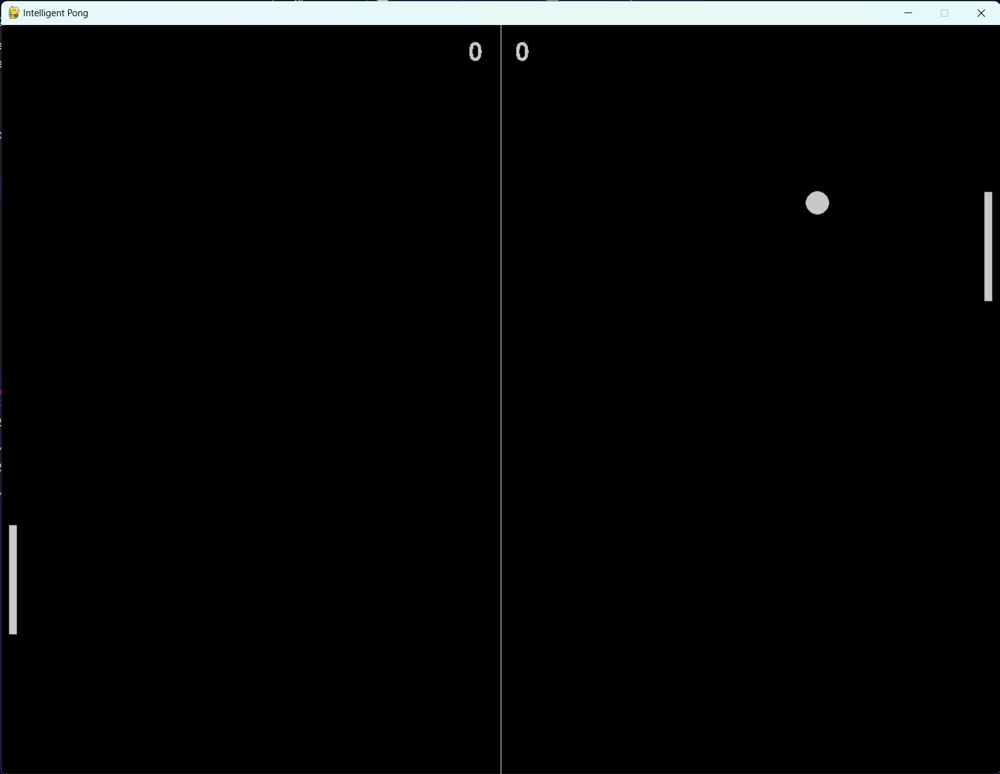
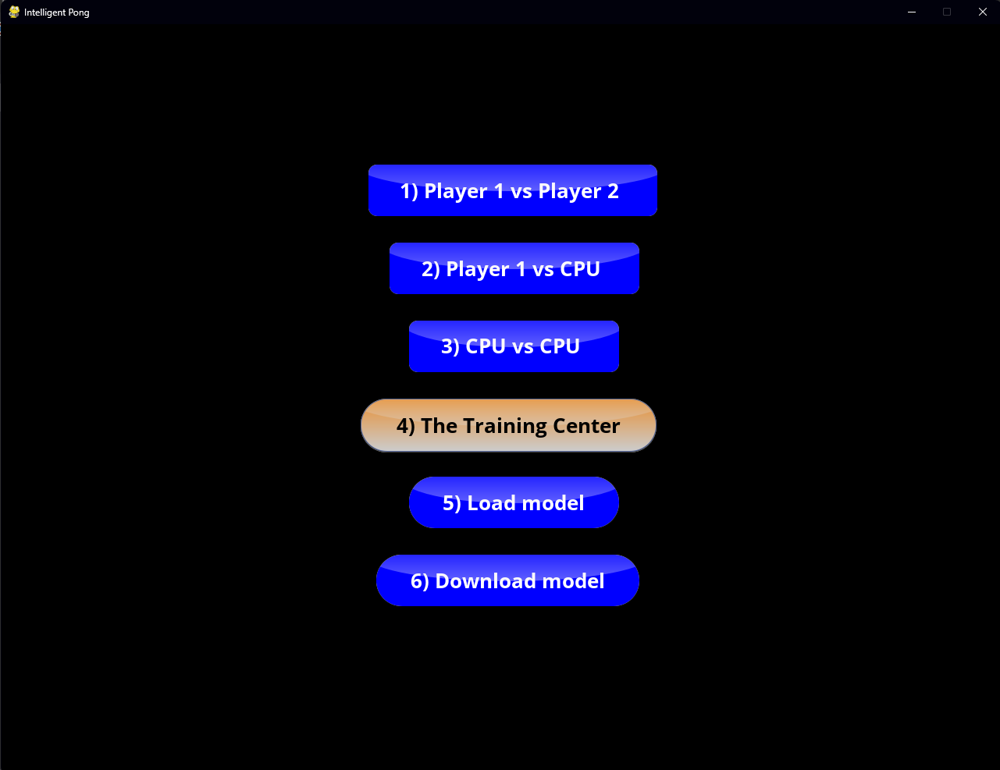
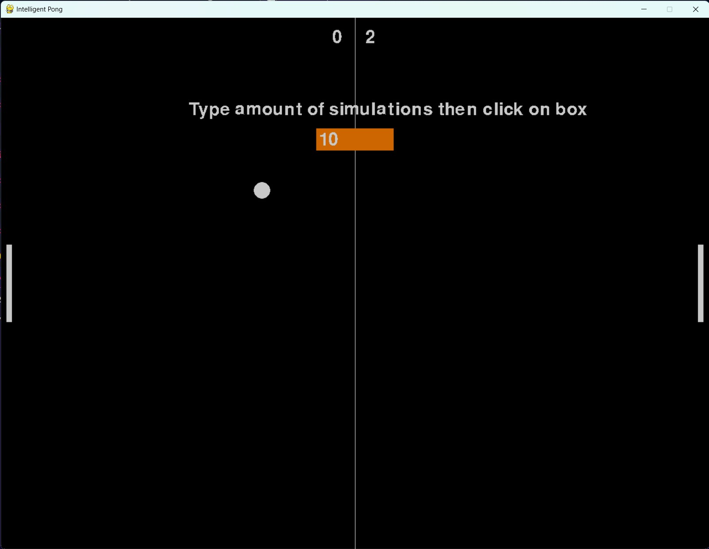

Pablo Sauma Chacón
Este proyecto consiste en implementar un modelo de inteligencia artificial para algún juego de mesa o digital previamente aprobado por el profesor.
Para este proyecto se decidió implementar una versión del juego Pong. Pong es un juego inspirado en el tennis de messa, en el cual un jugador mueve su paleta de manera vertical para poder hacer contacto con una bola en movimiento.

El objetivo del juego consiste envitar que la pelota toque la pared defendida por uno y realizar más puntos que el oponente.
El programa se desarrolló utilizando la libreria Pygame. Esta libreria ofrece módulos y herramientas para el desarrollo de juegos con Python. Para inicializar el programa se ejecuta el main.py. Al inicializar el programa se encontrá un menú con varias opciones.

La primera opción consiste en un modo de Jugador 1 contra Jugador 2. El jugador 1 utilizará las flechas de arriba y abajo para mover si paleta, mientras que el jugador 2 utilizará las teclas w y s.
Las opciones 2 y 3 son muy similares, ya que se introduce el uso de un agente inteligente. Estas opciones son para medir el rendimiendo del agente inteligente.
Sin embargo, cabe destacar que la opción 4, denominada The Training Center, es un modo en donde el agente inteligente estará aprendiendo a desenvolverse en el ambiente.

En este modo, el agente inteligente jugará de forma automatica, sin embargo, para acelerar el proceso de aprendizaje se pueden agregar n cantidad de simulaciones en la cajita y acelerar el proceso.
Asímismo, la opción 5 permite cargar un modelo almacenado en la carpeta model, mientras que la opción 6 permite guardar uno de este tipo después de realizar entrenamiento.
Para la implementación del aprendizaje se utilizó la técnica de Deep-Q Learning. Dentro de esta metodología se utilizó una red neuronal con una capa de entrada, una intermedia y una de salida. Mediante la siguiente configuración:
Capa de entrada de 3 neuronas las cuales representan un estado.
Capa intermedia de 128 neuronas con activación Tangente hiperbólico para tener valores tando positivos como negativos (de -1 a 1).
Capa de salida con activación Leaky Relu para la aproximación de los valores Q con 2 neuronas las cuales representan los dos movimientos disponibles de la paleta (arriba y abajo).
Se utilizó la siguiente representación de un estado para cada jugador para el algoritmo de Deep-Q Learning:
(Distancia Coordenada Y de la paleta hacia la bola, Posición Coordenada Y de la paleta, Coordenada Y de la paleta rival)
El agente inteligente tendrá tres opciones disponibles; moverse para arriba o para abajo. El agente decidirá y ejecutará una de estas acción. Cada agente generará una salida del estado, asi como su valor respectivo de recompensa. La entrada de cada agente será la acción determinada por el modelo de aprendizaje mecánico.
En el entrenamiento dado que la bola tiene un comportamiento continuo genera un problema de tiempo al calcular la recompensa para momentos cortos como el tocar la paleta, ya que el llamado al cálculo de esta puede no darse en el momento justo que se da la acción de la bola y la paleta. Para resolverlo se seleccionaron tamaños de conjuntos de pruebas más pequeños (batch size) cuando se realizaba el entrenamiento por lo que se disminuyeron los tiempos de cada step logrando así que el agente respondiera más rápido para obtener la recompensa.
Tiempos de entrenamientos altos ya que un escenario puede tardar entre 4 segundos a 10 segundos aproximadamente. Para resolverlo se comenzaron a hacer pruebas con tiempo anticipado.
En el modo de juego 2 a veces ocurre que la paleta controllada por el IA se queda pegada en la posición inferior.
En el video, que se puede apreciar al hacer click en la imagen anterior, se muestra el mejor resultado obtenido tras un entrenamiento con 100 iteraciones, batch size de 50, c_iters de 30, learning rate de 1e-5, discount factor de 1e-5, epsilon greedy de 0.6 y un decay de 1e-8. Con estos parámetros se puede notar que el modelo reacciona correctamente cuando la bola inicia hacia abajo, sin embargo cuando se desplaza hacia arriba la paleta se queda abajo y no defiende.
A manera de conclusiones, se comprendió por medio de aprendizaje basado en proyecto de como utilizar una red neuronal, un agente inteligente, y una representación de estados de un juego complejo para realizar un sistema Deep Q. Uno de los retos más grandes fue de como representar las recompenzas de los agentes, ya que esto define hacia donde va a converger los valores de la red neuronal.